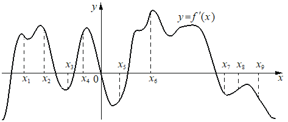

На рисунке изображён график производной функции На оси абсцисс отмечено девять точек: Сколько из этих точек принадлежит промежуткам возрастания функции ?

КЭС: 4.2 Применение производной к исследованию функций на монотонность и экстремумы. Нахождение наибольшего и наименьшего значения функции на отрезке